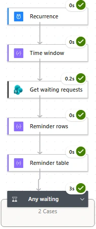
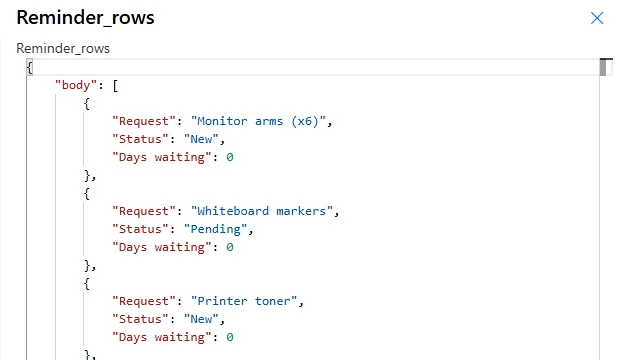

- Power Automate
- Level 8 · Real-world patterns · 3 of 8
Reminder and recurrence flows
Some work isn't started by an event but by the clock: a daily digest, a weekly reminder, a monthly clean-up. These are scheduled flows, started by the Recurrence trigger.
The schedule

| Setting | What it does |
|---|---|
| Frequency and interval | Every 1 week, every 2 days, every 15 minutes, and so on |
| On these days | Only for Week frequency: pick weekdays to skip weekends |
| At these hours / minutes | The time of day in the chosen time zone |
| Time zone | Without it, times are UTC. Set it so 9:00 means 9:00 for the people being reminded. |
Reminding about waiting requests


div(sub(ticks(utcNow()), ticks(item()?['Created'])), 864000000000)| Piece | What it does |
|---|---|
ticks(...) | A date as a count of 100-nanosecond steps. |
sub(now, created) | How long the item has existed, in ticks. |
div(..., 864000000000) | Ticks in one day, so the result is whole days waiting. |
Send one summary message per person per run, not one per item, and only when there is something to send. The demo's Any waiting condition skips the message when the list is empty.
Looking back since the last run
A scheduled flow that should process "everything since last time" needs a time window. Calculate it from the run's start: for a daily flow, addDays(utcNow(), -1) to utcNow(), and filter on Modified between them. Logic Apps has a Sliding Window trigger that passes the window for you; in Power Automate you build it yourself like this, or store the last successful run time in a list.
New to this? Start from the basics optional
Scheduled flow: a flow started by Recurrence instead of an event.
Ticks: a precise count of time used to subtract dates and get whole days or hours.
Build it step by step optional
- Create a Scheduled cloud flow, choose the start time and repeat interval.
- Open the Recurrence trigger and set Time zone and On these days.
- Add Get items with a filter for what's waiting, such as
Status eq 'Pending'. - Use Select and Create HTML table to build one summary.
- Wrap the send step in a Condition so nothing is sent when the list is empty.
Common mistakes
- No time zone, so the 9:00 reminder arrives at 2:30 in the afternoon.
- One email per item, so people get twenty messages and ignore all of them.
- A one-minute schedule for something that only matters daily. It wastes requests (see Request limits).